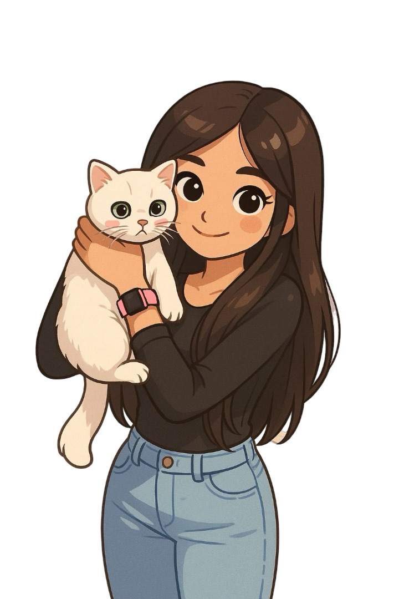

hi, nice to meet you! :)
my name is shehrina hossain and i’m currently a third year student @ western university (rollll stangs 🤟) completing my honours bsc in computer science w/ a minor in software engineering! i’m also currently a cloud platform engineer intern @ league, working w/ tools like terraform, gcp, aws, and python. i love all things cloud & backend, and have a current growing interest in ai & ml.
aside from working and coding, some of my favourite things are cats, salmon sashimi, and stardew valley.
for more info about me, feel free to look through my resume and some of my portfolio! my contact info can also be found on this site, i’m always open to chatting about new opportunities as well :)
resume